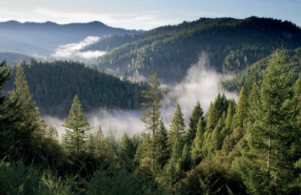
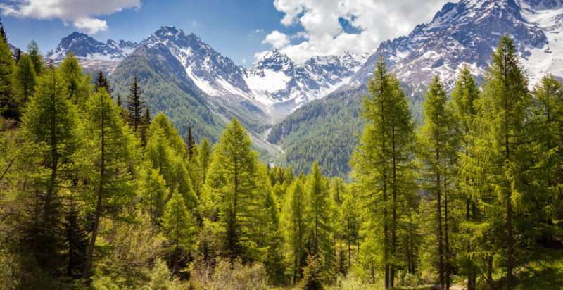
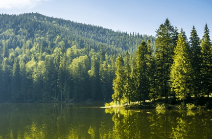
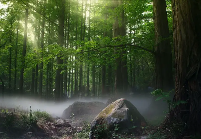
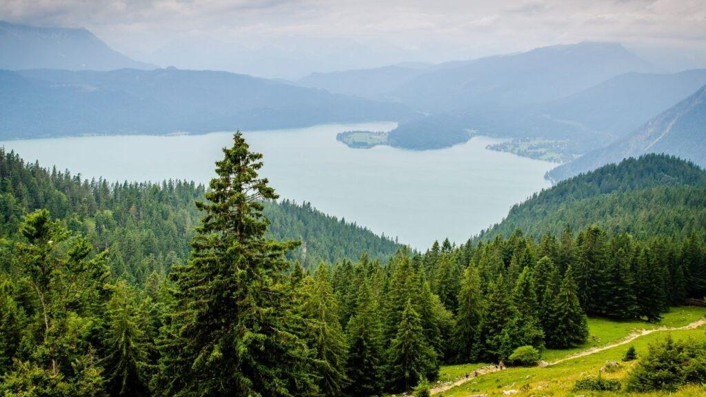
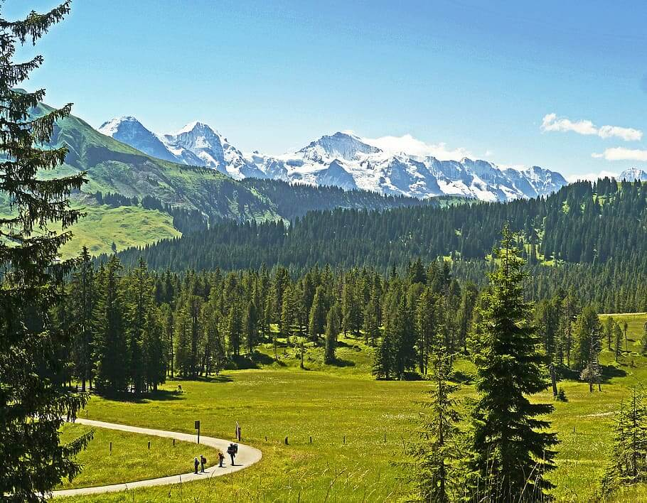

Bosque de coníferas (pinos y encinos)Es un bosque que se encuentra en las regiones templadas, semifrías y montañosas del país.
Su clima es semi húmedo y frío. Con árboles de 6, 8 y hasta 30 m.
El bosque de pinos es el de mayor importancia y está representado por pinos (de 300 a
4200 msnm); luego por el bosque de oyamel (de 2000 a 3400 msnm). Son bosques siempre
verdes, ya que conservan sus hojas todo el año. Es el ecosistema con mayor número de
organismos considerados forestales, con 80% del volumen total anual de madera



Por sus afinidades ecológicas generales, los pinares (bosques de pinos) y los encinares
(bosques de quercus) guardan relaciones complejas entre ellos y así permanecen juntos en
el mismo ecosistema.



La fauna está representada por
arañas, ácaros y pseudoescorpiones;
insectos como pulgones,
escarabajos, mariposas y hormigas;
entre los vertebrados se encuentran
ranas, sapos y algunas salamandras;
reptiles como víbora de cascabel y
lagartijas; aves como águilas y búhos;
además de murciélagos, ratones de
campo, ardillas, armadillos, venados
cola blanca, coyote y zorra gris.
Angel Esteban Tabardillo BrionesDayann Gerardo Cordova ArmendarizJuan Pablo Ortiz GonzalesIvan Alberto Rodriguez HernandezJose Rigoberto Martinez Peraza